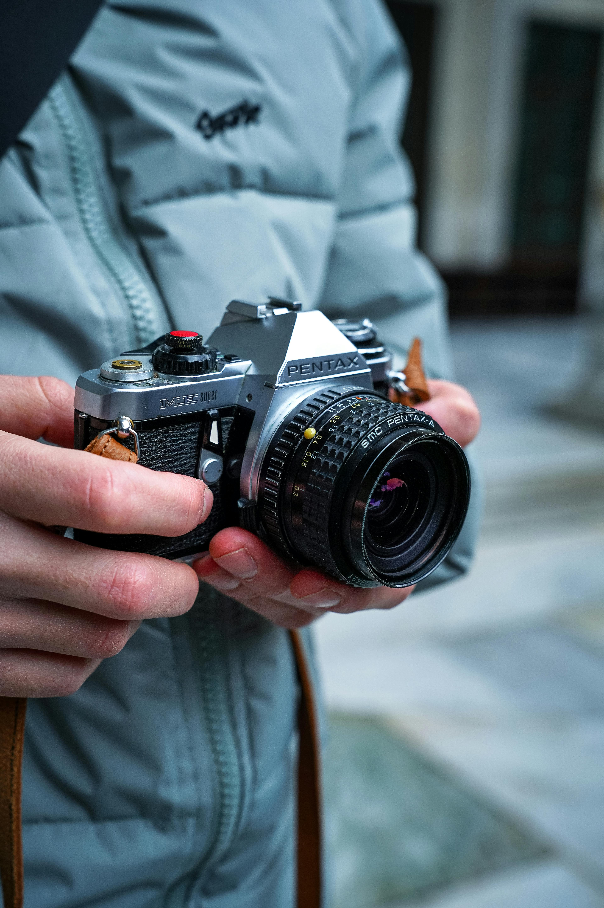

Lo que me motiva
¡Hola! Soy [Nombre del Fotógrafo], un apasionado de la fotografía que ve la cámara no solo como una herramienta, sino como una extensión de mi visión, mi creatividad y mi forma de conectar con el mundo. Mi objetivo es capturar momentos únicos que cuenten una historia, transmitan emociones y queden inmortalizados para siempre.
¿Quién soy?
Desde joven, la fotografía ha sido mi pasión. Comencé a explorarla como un hobby, pero rápidamente me di cuenta de que tenía el poder de transformar momentos fugaces en recuerdos eternos. Estudié [nombre de la institución o tipo de formación], y desde entonces he trabajado con una variedad de clientes en diferentes áreas, siempre buscando la perfección en cada toma.